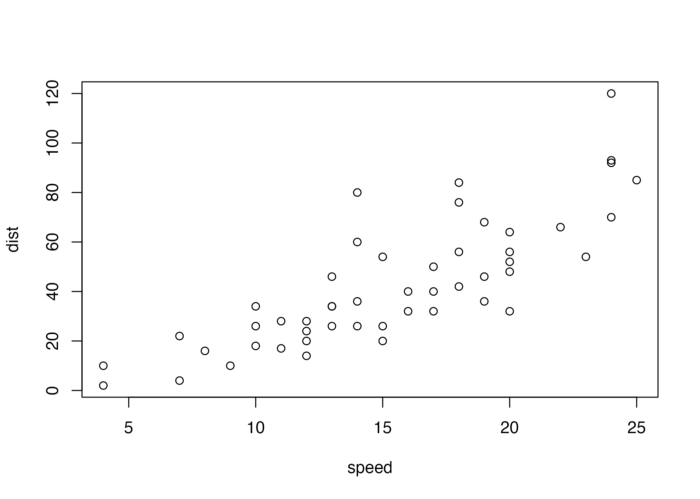
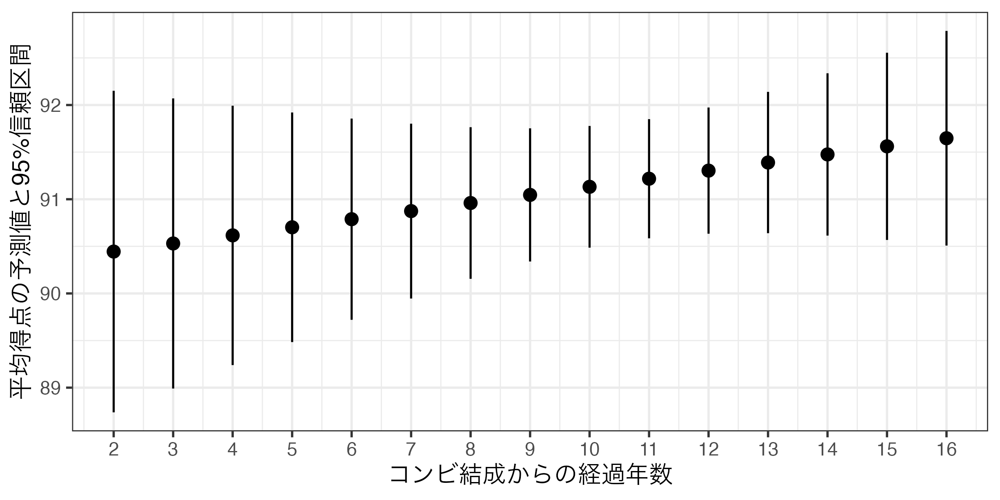

第10回講義資料
分析結果の報告
スライド
授業日まで完成します…!!!!!
分析結果をどう示すか
前回までは線形回帰分析の理論、推定、解釈方法を紹介したが、この分析結果をレポートや論文に提示する場合はどうすれば良いだろうか。分析手法ごとに報告方法は異なるが、本講義では線形回帰分析に焦点を当てる1。
それでは本日の実習で使用するパッケージとデータを読み込んでおこう。馴染みの{tidyverse}と{modelsummary}に加え、今回は{marginaleffects}というパッケージも使用する。宋がこの授業のためにセットアップしたJDCat分析ツールであれば、既にインストールされているが、自前のPCにインストールしたR + RStudioを使用する場合、コンソール上でinstall.packages("marginaleffects")と入力し、インストールしてから読み込んでおこう。
データはM1.csvであり、LMSから入手可能だ。read_csv()内のパスは適宜修正すること。読み込んだデータはdfと名付け、作業環境上に格納する。
このデータはある暇な研究者が集めたM-1グランプリのデータの一部だ。フルバージョンのデータはここから入手できる。データは60行8列であり、各変数の詳細は以下の通りだ。
| 変数名 | 説明 | 備考 |
|---|---|---|
No |
第X回大会 | 第13回（2017年）から |
Year |
大会年度 | |
Name |
コンビ名 | |
Duration |
結成からの経過年数 | |
First |
初出場ダミー | 1 = 初出場 / 0 = その他 |
Final |
ファイナルステージへの進出有無 | |
Order |
出場順番 | 1から10 |
Score_Mean |
平均得点 | 7人の審査委員からの評価の平均値 |
分析に入る前にデータの記述統計を計算する。{summarytools}パッケージのdescr()を使用するが、1回使うためにわざわざ{summarytools}を読み込むのも面倒なので、summarytools::descr()で関数を呼び出そう2。
df |>
summarytools::descr(stats = c("mean", "sd", "min", "max", "n.valid"),
transpose = TRUE, order = "p")Descriptive Statistics
df
N: 50
Mean Std.Dev Min Max N.Valid
---------------- --------- --------- --------- --------- ---------
No 15.00 1.43 13.00 17.00 50.00
Year 2019.00 1.43 2017.00 2021.00 50.00
Duration 10.76 3.74 2.00 16.00 50.00
First 0.52 0.50 0.00 1.00 50.00
Final 0.30 0.46 0.00 1.00 50.00
Order 5.50 2.90 1.00 10.00 50.00
Score_Mean 91.20 2.40 84.86 97.29 50.00 本日の内容は分析結果をどう報告するかに関するものなので、予めいくつかの回帰モデルを推定しておこう。今回は平均得点（Score_Mean）を応答変数とした線形回帰モデルを推定する。説明変数は出場順番（Order）、初出場ダミー（First）、芸歴（Duration）の3つを用意する。出場順番（Order）のみ投入した単回帰モデルをfit1、初出場ダミー（First）を加えたものをfit2、全て投入したモデルをfit3と名付ける。
回帰表
単一モデルの例
回帰分析の推定結果（切片や傾きの点推定値、標準誤差、信頼区間、\(p\)値、決定係数など）はsummary()関数で簡単に確認できる。
Call:
lm(formula = Score_Mean ~ Order + First + Duration, data = df)
Residuals:
Min 1Q Median 3Q Max
-6.3582 -1.2054 0.3995 1.0814 5.6779
Coefficients:
Estimate Std. Error t value Pr(>|t|)
(Intercept) 88.82624 1.42843 62.184 < 2e-16 ***
Order 0.31226 0.11427 2.733 0.00889 **
First -0.52116 0.67304 -0.774 0.44269
Duration 0.08592 0.09234 0.930 0.35700
---
Signif. codes: 0 '***' 0.001 '**' 0.01 '*' 0.05 '.' 0.1 ' ' 1
Residual standard error: 2.276 on 46 degrees of freedom
Multiple R-squared: 0.1564, Adjusted R-squared: 0.1014
F-statistic: 2.843 on 3 and 46 DF, p-value: 0.04794 しかし、これは分析する側が結果を確認するために用意されたものであり、「他人に見せる」ために用意されたものではない。レポートや論文に推定結果を示す場合は表を使う場合が多いが、summary()関数から得られたものはあくまでの文字列のみだ。ここで便利なのが{modelsummary}パッケージである。使い方は簡単でmodelsummary(回帰オブジェクト名)のみで良い。
| (1) | |
|---|---|
| (Intercept) | 89.627 |
| (0.696) | |
| Order | 0.286 |
| (0.112) | |
| Num.Obs. | 50 |
| R2 | 0.119 |
| R2 Adj. | 0.101 |
| AIC | 228.1 |
| BIC | 233.9 |
| Log.Lik. | −111.072 |
| F | 6.486 |
| RMSE | 2.23 |
一発でかなりきれいな表ができた。デフォルトでは切片と傾き係数の点推定値と標準誤差（カッコ内）が表示される。また、分析に使用されたサンプルサイズ（Num.Obs.）や適合度指標（決定係数（R2）、調整済み決定係数（R2 Adj.））なども表示される。これでも十分良いが、ここからはより自分好みの表にするためにいくつかカスタマイズしてみよう。
その前に前提知識としてmodelsummary()では各変数に対応する統計量が2行構成になっていることを意識する必要がある。デフォルトだと1行目は点推定値、2行目はその標準誤差である。modelsummary()関数ではestimate（1行目）とstatistic（2行目）引数で出力される統計量を変更することができる。デフォルトだとestimateは点推定値（"{estimate}"）、statisticは標準誤差（"{std.error}"）になっている。つまり、modelsummary(オブジェクト名)はmodelsummary(オブジェクト名, estiamte = "{estimate}", statistic = "{std.error}")と同じコードだ。このように"{統計量}"の形式で表示する統計量が選択できる。たとえば、\(p\)値は"{p.value}"、95%信頼区間の下限は"{conf.low}"、上限は"{conf.high}"だ3。もし、特定の行を消したい場合はNULLを割り当てる。
それではいくつかの例を確認してみよう。まずは標準誤差の代わりに\(p\)値を表示する例からだ。
| (1) | |
|---|---|
| (Intercept) | 89.627 |
| (<0.001) | |
| Order | 0.286 |
| (0.014) | |
| Num.Obs. | 50 |
| R2 | 0.119 |
| R2 Adj. | 0.101 |
| AIC | 228.1 |
| BIC | 233.9 |
| Log.Lik. | −111.072 |
| F | 6.486 |
| RMSE | 2.23 |
| 注：カッコ内はp値 |
切片（(Intercept)）の\(p\)値が<0.001と表示されているが、これは\(p\)値が0.001より小さい、つまり非常に小さいことを意味する。これなら\(\alpha = 0.001\)で検定を行っても統計的に有意であると判定できる水準である。また、note引数で表の下に注も付けることができる。2行目の統計量が何の統計量か分からない人もいるかも知れないので、このように付けておくことをおすすめする。
次の例は、点推定値と標準誤差を一行にまとめる例だ。たとえば「点推定値 (標準誤差)」のようにまとめるとする。2行目（statistics）にはNULLを割り当てて各変数の2行目を削除し、1行目（estimate）は"{estimate} ({std.error})"と指定すれば良い。
| (1) | |
|---|---|
| (Intercept) | 89.627 (0.696) |
| Order | 0.286 (0.112) |
| Num.Obs. | 50 |
| R2 | 0.119 |
| R2 Adj. | 0.101 |
| AIC | 228.1 |
| BIC | 233.9 |
| Log.Lik. | −111.072 |
| F | 6.486 |
| RMSE | 2.23 |
| 注：カッコ内は標準誤差 |
また、以下のように標準誤差を90%信頼区間に変えることもできる。デフォルトでは95%信頼区間が表示されるので、90%を使いたい場合はconf_levelを0.9に変える必要がある。
modelsummary(fit1,
conf_level = 0.9,
estimate = "{estimate}",
statistic = "[{conf.low}, {conf.high}]",
note = "注：カッコ内は90%信頼区間")| (1) | |
|---|---|
| (Intercept) | 89.627 |
| [88.460, 90.793] | |
| Order | 0.286 |
| [0.097, 0.474] | |
| Num.Obs. | 50 |
| R2 | 0.119 |
| R2 Adj. | 0.101 |
| AIC | 228.1 |
| BIC | 233.9 |
| Log.Lik. | −111.072 |
| F | 6.486 |
| RMSE | 2.23 |
| 注：カッコ内は90%信頼区間 |
モデルの当てはまりの良さ、評価指標として本講義では決定係数（\(R^2\)）と調整済み決定係数（Adjusted \(R^2\)）を紹介した。これらの統計量は適合度指標（goodness of fit; gof）と呼ばれるが、分析手法によって使用可能な適合度指標が異なる。{modelsummary}のget_gof()関数を使えば、使用可能な適合度指標が出力される。以下はfit3の適合度指標を出力するコードだ。
aic bic r.squared adj.r.squared rmse nobs F logLik
1 229.9754 239.5355 0.1564347 0.1014196 2.183251 50 2.843485 -109.9877 基本的には上記のすべての適合度指標がmodelsummary()で出力されるが、gof_map引数で一部だけ出力させることもできる。今回のような線形回帰分析ならサンプルサイズ（"nobs"）、決定係数（r.squared）、調整済み決定係数（"adj.r.squared"）程度で十分だろう。それではこの3つの指標のみ出してみよう。3つの指標となるのでc()でcharacter型ベクトルを割り当てれば良い。
fit3 |> # パイプ演算子も使用可
modelsummary(
estimate = "{estimate} ({p.value})",
statistic = NULL,
gof_map = c("nobs", "r.squared", "adj.r.squared"),
note = "注：カッコ内はp値"
)| (1) | |
|---|---|
| (Intercept) | 88.826 (<0.001) |
| Order | 0.312 (0.009) |
| First | −0.521 (0.443) |
| Duration | 0.086 (0.357) |
| Num.Obs. | 50 |
| R2 | 0.156 |
| R2 Adj. | 0.101 |
| 注：カッコ内はp値 |
複数モデルの例
一つの表に複数の推定結果を並べることもでいる。方法は回帰オブジェクトをlist()でまとめるだけだ。
| (1) | (2) | (3) | |
|---|---|---|---|
| (Intercept) | 89.627 | 89.953 | 88.826 |
| (0.696) | (0.757) | (1.428) | |
| Order | 0.286 | 0.292 | 0.312 |
| (0.112) | (0.112) | (0.114) | |
| First | −0.699 | −0.521 | |
| (0.644) | (0.673) | ||
| Duration | 0.086 | ||
| (0.092) | |||
| Num.Obs. | 50 | 50 | 50 |
| R2 | 0.119 | 0.141 | 0.156 |
| R2 Adj. | 0.101 | 0.104 | 0.101 |
自動的に（1）、（2）、…のようにモデル名が付くが"モデル名" = オブジェクト名のように書くと任意のモデル名も指定できる。
modelsummary(list("Model 1" = fit1, "Model 2" = fit2, "Model 3" = fit3),
gof_map = c("nobs", "r.squared", "adj.r.squared"))| Model 1 | Model 2 | Model 3 | |
|---|---|---|---|
| (Intercept) | 89.627 | 89.953 | 88.826 |
| (0.696) | (0.757) | (1.428) | |
| Order | 0.286 | 0.292 | 0.312 |
| (0.112) | (0.112) | (0.114) | |
| First | −0.699 | −0.521 | |
| (0.644) | (0.673) | ||
| Duration | 0.086 | ||
| (0.092) | |||
| Num.Obs. | 50 | 50 | 50 |
| R2 | 0.119 | 0.141 | 0.156 |
| R2 Adj. | 0.101 | 0.104 | 0.101 |
やや話がずれるが、表示される変数名を変えることもできる。変数名のままになると読者は「この変数って何？」と思うかも知れない。いきなり表を見せつけられても解釈ができる表が良い表なので、なるべく元の変数名ではなく、ちゃんと言葉で書いておこう。変数名の修正はcoef_rename引数で調整でき、書き方は"元の変数名" = "新しい変数名"である。複数の変数名を変更する場合、c()でまとめる。
modelsummary(list(fit1, fit2, fit3),
coef_rename = c("(Intercept)" = "切片",
"Order" = "出場順番",
"First" = "初出場ダミー",
"Duration" = "結成からの経過年数"),
gof_map = c("nobs", "r.squared", "adj.r.squared"))| (1) | (2) | (3) | |
|---|---|---|---|
| 切片 | 89.627 | 89.953 | 88.826 |
| (0.696) | (0.757) | (1.428) | |
| 出場順番 | 0.286 | 0.292 | 0.312 |
| (0.112) | (0.112) | (0.114) | |
| 初出場ダミー | −0.699 | −0.521 | |
| (0.644) | (0.673) | ||
| 結成からの経過年数 | 0.086 | ||
| (0.092) | |||
| Num.Obs. | 50 | 50 | 50 |
| R2 | 0.119 | 0.141 | 0.156 |
| R2 Adj. | 0.101 | 0.104 | 0.101 |
回帰表の可視化
余談だが、回帰表も図にすることができる。最近の政治学では回帰表を使う人も多いが、図で回帰表を示す人も急増している。ここでは{modelsummary}のmodelplot()関数を紹介しよう。使い方はmodelsummary()と非常に似ており、まずmodelplot()内に回帰オブジェクト名を入れておけばそれっぽい図が生成される。
modelplot(list("Model 1" = fit1, "Model 2" = fit2, "Model 3" = fit3),
coef_omit = "(Intercept)",
coef_map = c("Duration", "First", "Order")) +
geom_vline(xintercept = 0, linetype = 2)- 1
- 切片を表示しない
- 2
- 表示順番を「下」からDuraion、First、Orderの順に
- 3
- x = 0に破線を引く

modelplot()から作成された図は{ggplot2}ベースなので+でレイヤーの追加および調整できる。本講義の履修者は{ggplot2}なしでは生きていけない人のはずなので非常に嬉しい知らせだろう。modelplot()の詳細はコンソール上で?modelplotを入力してヘルプを見るか公式ページで確認してみよう。他にも{coefplot}も人気だ4。
回帰分析結果の可視化
可視化の手順
{marginaleffects}と{ggplot2}パッケージを使用（{ggplot2}は{tidyverse}と同時に自動的に読み込まれる）
predictions()関数で予測値を計算し、オブジェクトとして格納- 表形式オブジェクトとして格納される。
- 予測値・限界効果オブジェクトの加工（ラベル付け/factor化）
- 予測値/限界効果は
estimate列 - 95%信頼区間の下限と上限は
conf.lowとconf.high列
- 予測値/限界効果は
- {ggplot2}を用いた作図
- 予測値 + 95%信頼区間
- 横軸上の値が少ない場合、
geom_pointrange() - 横軸上の値が多い場合、
geom_line()+geom_ribbon()
今後紹介するロジスティック回帰分析の場合、predictions()関数を使うと予測「確率」が表示される。また、交差項を含むモデルの場合は予測値・予測確率以外にもslopes()関数で限界効果を計算し、可視化する必要がある。いずれも今後の講義で紹介する。
予測値の計算（fit3の場合）
- 例）初出場ダミー（
First）の値が0の場合と1の場合の、Score_Meanの予測値は?
\[ \widehat{\mbox{Score\_Mean}} = 89.605 + 0.258 \cdot \mbox{Order} - 0.963 \cdot \mbox{First} + 0.076 \cdot \mbox{Duration}. \]
OrderとDurationは平均値（それぞれ5.5、10.6）に固定し、Firstだけ0と1を入れる。
計算例
- 初出場（
First = 1）の場合- 89.605 + 0.256 \(\times\) 5.5 - 0.963 \(\times\) 1 + 0.076 \(\times\) 10.6 \(\simeq\) 90.856
- 初出場ではない（
First = 0）場合- 89.605 + 0.256 \(\times\) 5.5 - 0.963 \(\times\) 0 + 0.076 \(\times\) 10.6 \(\simeq\) 91.819
- {marginaleffects}の
predictions()関数を使えば簡単に計算可能
予測値の計算（fit3利用）
- 例）初出場ダミー（
First）の値が0の場合と1の場合の、Score_Meanの予測値を計算し、fit3_pred1という名のオブジェクトとして格納
First Estimate Std. Error z Pr(>|z|) S 2.5 % 97.5 % Order Duration
0 91.5 0.476 192 <0.001 Inf 90.5 92.4 5.5 10.8
1 90.9 0.456 199 <0.001 Inf 90.1 91.8 5.5 10.8
Columns: rowid, estimate, std.error, statistic, p.value, s.value, conf.low, conf.high, Score_Mean, Order, Duration, First
Type: response Estimate列が予測値、2.5%と97.5%列が95%信頼区間の下限と上限First以外の変数は平均値に固定される。
平均値以外に固定する方法
- 例）初出場ダミー（
First）の値が0の場合と1の場合の、Score_Meanの予測値を計算し、fit3_pred2という名のオブジェクトとして格納- ただし、出場順番は5番目（
Order = 5）、結成からの年数は5年（Duration = 5）と固定する。
- ただし、出場順番は5番目（
fit3_pred2 <- predictions(fit3,
newdata = datagrid(First = c(0, 1),
Order = 5,
Duration = 5))
fit3_pred2
First Order Duration Estimate Std. Error z Pr(>|z|) S 2.5 % 97.5 %
0 5 5 90.8 0.793 114 <0.001 Inf 89.3 92.4
1 5 5 90.3 0.639 141 <0.001 Inf 89.0 91.5
Columns: rowid, estimate, std.error, statistic, p.value, s.value, conf.low, conf.high, Score_Mean, First, Order, Duration
Type: response 作図の際の注意事項
fit3_pred2で表示される列名は「本当の」列名ではない!!- ユーザーが読みやすいように列名が変更されてから出力される。
- たとえば、予測値の本当の列名は
estimateだが、表示名はEstimateになっている。
- 「本当の」列名が見たい場合は
print(オブジェクト名, style = "data.frame")
rowid estimate std.error statistic p.value s.value conf.low conf.high Score_Mean First Order
1 1 90.81712 0.7933713 114.4699 0 Inf 89.26214 92.37210 91.19714 0 5
2 2 90.29596 0.6386978 141.3751 0 Inf 89.04414 91.54778 91.19714 1 5
Duration
1 5
2 5- 作図によく使うのは予測値（
estimate）、信頼区間の下限（conf.low）と上限（conf.high）、動かしている変数名（ここではFirst）
作図の例
Pointrangeプロットを使用する。
geom_pointrange()レイヤー
x：説明変数y：予測値ymin：信頼区間の下限ymax：信頼区間の上限
fit3_pred2_plot1 <- fit3_pred2 |>
ggplot() +
geom_pointrange(aes(x = First, y = estimate,
ymin = conf.low, ymax = conf.high)) +
labs(x = "初出場ダミー",
y = "予測点数と95%信頼区間") +
theme_bw(base_size = 12)
fit3_pred2_plot1
無駄の目盛りの削除
- 横軸（X軸）の無駄な目盛りを削除し、0と1のみ残す。
scale_x_continuous()で目盛り調整
breaks：目盛りの位置labels：目盛りのラベル

出場順番と平均得点間の関係（計算）
Order Estimate Std. Error z Pr(>|z|) S 2.5 % 97.5 % First Duration
1 89.8 0.607 148 <0.001 Inf 88.6 91.0 0.52 10.8
2 90.1 0.513 176 <0.001 Inf 89.1 91.1 0.52 10.8
3 90.4 0.430 210 <0.001 Inf 89.6 91.3 0.52 10.8
4 90.7 0.365 249 <0.001 Inf 90.0 91.4 0.52 10.8
5 91.0 0.327 278 <0.001 Inf 90.4 91.7 0.52 10.8
6 91.4 0.327 279 <0.001 Inf 90.7 92.0 0.52 10.8
7 91.7 0.365 251 <0.001 Inf 91.0 92.4 0.52 10.8
8 92.0 0.430 214 <0.001 Inf 91.1 92.8 0.52 10.8
9 92.3 0.513 180 <0.001 Inf 91.3 93.3 0.52 10.8
10 92.6 0.607 153 <0.001 Inf 91.4 93.8 0.52 10.8
Columns: rowid, estimate, std.error, statistic, p.value, s.value, conf.low, conf.high, Score_Mean, First, Duration, Order
Type: response 出場順番と平均得点間の関係（可視化）
fit3_pred3 |>
ggplot() +
geom_pointrange(aes(x = Order, y = estimate, ymin = conf.low, ymax = conf.high)) +
scale_x_continuous(breaks = 1:10, labels = 1:10) +
labs(x = "出場順番", y = "平均得点の予測値と95%信頼区間") +
theme_bw(base_size = 12)
芸歴と平均得点間の関係（計算）
Duration Estimate Std. Error z Pr(>|z|) S 2.5 % 97.5 % Order First
2 90.4 0.871 104 <0.001 Inf 88.7 92.2 5.5 0.52
3 90.5 0.786 115 <0.001 Inf 89.0 92.1 5.5 0.52
4 90.6 0.702 129 <0.001 Inf 89.2 92.0 5.5 0.52
5 90.7 0.622 146 <0.001 Inf 89.5 91.9 5.5 0.52
6 90.8 0.545 167 <0.001 Inf 89.7 91.9 5.5 0.52
7 90.9 0.473 192 <0.001 Inf 89.9 91.8 5.5 0.52
8 91.0 0.411 222 <0.001 Inf 90.2 91.8 5.5 0.52
9 91.0 0.361 252 <0.001 Inf 90.3 91.8 5.5 0.52
10 91.1 0.329 277 <0.001 Inf 90.5 91.8 5.5 0.52
11 91.2 0.323 283 <0.001 Inf 90.6 91.9 5.5 0.52
12 91.3 0.342 267 <0.001 Inf 90.6 92.0 5.5 0.52
13 91.4 0.383 239 <0.001 Inf 90.6 92.1 5.5 0.52
14 91.5 0.439 208 <0.001 Inf 90.6 92.3 5.5 0.52
15 91.6 0.507 181 <0.001 Inf 90.6 92.6 5.5 0.52
16 91.6 0.581 158 <0.001 Inf 90.5 92.8 5.5 0.52
Columns: rowid, estimate, std.error, statistic, p.value, s.value, conf.low, conf.high, Score_Mean, Order, First, Duration
Type: response 芸歴と平均得点間の関係（可視化）
fit3_pred4 |>
ggplot() +
geom_pointrange(aes(x = Duration, y = estimate, ymin = conf.low, ymax = conf.high)) +
scale_x_continuous(breaks = 2:16, labels = 2:16) +
labs(x = "コンビ結成からの経過年数", y = "平均得点の予測値と95%信頼区間") +
theme_bw(base_size = 12)
折れ線グラフとリボン（geom_ribbon()）の組み合わせ
- 横軸が細かいほどpoint-rangeプロットは気持ち悪くなる（ムカデのような見た目になる）。
geom_ribbon()はx、ymin、ymaxにマッピングgeom_pointrange()と使い方は同じだが、予測値の情報を持たないため、yは不要
fit3_pred4 |>
ggplot() +
geom_ribbon(aes(x = Duration, ymin = conf.low, ymax = conf.high)) +
scale_x_continuous(breaks = 2:16, labels = 2:16) +
labs(x = "コンビ結成からの経過年数", y = "平均得点の予測値と95%信頼区間") +
theme_bw(base_size = 12)
折れ線グラフ + リボン
fit3_pred4 |>
ggplot(aes(x = Duration)) +
geom_ribbon(aes(ymin = conf.low, ymax = conf.high), fill = "gray70") +
geom_line(aes(y = estimate), linewidth = 1) +
scale_x_continuous(breaks = 2:16, labels = 2:16) +
labs(x = "コンビ結成からの経過年数", y = "平均得点の予測値と95%信頼区間") +
theme_bw(base_size = 12)- 1
-
geom_ribbon()とgeom_line()は同じ横軸を共有するため、ここでマッピングした方が効率的 - 2
- デフォルトのリボンは暗い色なので、明るめの色に変える。
- 3
-
linewidthで折れ線グラフの太さを調整（1だとデフォルトよりやや太め）

信頼区間の話
出場順番と平均得点間の関係
今回得られた回帰直線

もう一度、過去に戻ってM-1をやったら…
こんな回帰直線が得られたとしてもおかしくはない（多分）

こんな回帰直線が得られる可能性は非常に低い（多分）

信頼区間の意味
この範囲（信頼区間）外の直線が得られる可能性は非常に低い！

傾き係数が正（負）に統計的有意であれば、この区間内に引ける直線は必ず右上がり（右下がり）となる。
- \(\alpha\) = 0.05で統計的有意だった
Order（\(p\) = 0.016）は、95%信頼区間内に右上がりの直線しか引けない。 - 右は統計的に有意でない
Duration変数の例（\(p\) = 0.381）- 水平線も、右上がり直線も、右下がり直線も引ける。
- \(\Rightarrow\)
DurationとScore_Meanの関係は現段階では判断できない。
- \(\alpha\) = 0.1を仮定するのであれば、90%（\(= (1 - \alpha) \times 100\)）信頼区間を使うこととなる。
fit3_pred4 |>
ggplot(aes(x = Duration)) +
geom_ribbon(aes(ymin = conf.low, ymax = conf.high), fill = "gray70") +
geom_segment(aes(x = 2, xend = 16, y = 91, yend = 91),
linewidth = 1.5, color = "#00798C") +
geom_segment(aes(x = 2, xend = 16, y = 90, yend = 92),
linewidth = 1.5, color = "#D1495B") +
geom_segment(aes(x = 2, xend = 16, y = 92, yend = 91),
linewidth = 1.5, color = "#66A182") +
geom_line(aes(y = estimate), linewidth = 1.5) +
scale_x_continuous(breaks = 2:16, labels = 2:16) +
labs(x = "コンビ結成からの経過年数", y = "平均得点の予測値と95%信頼区間") +
coord_cartesian(ylim = c(88, 93)) +
theme_bw(base_size = 12)
有意水準と信頼区間
（ありえないが、）\(\alpha\) = 0.6を採用する場合、40%信頼区間（\((1 - \alpha) \times 100\)%信頼区間）を使うことになる。
- 以下は40%信頼区間を採用した例（
predictions()内にconf_level = 0.4を追加する）- ただし、よく使うのは90%（\(\alpha\) = 0.1）、95%（\(\alpha\) = 0.05）、99%（\(\alpha\) = 0.01）信頼区間
predictions(fit3, newdata = datagrid(Duration = 2:16),
conf_level = 0.4) |>
ggplot(aes(x = Duration)) +
geom_ribbon(aes(ymin = conf.low, ymax = conf.high), fill = "gray70") +
geom_segment(aes(x = 2, xend = 16, y = 91.09444, yend = 91.44930),
linewidth = 1, color = "#00798C") +
geom_segment(aes(x = 2, xend = 16, y = 90.26250, yend = 92.02425),
linewidth = 1, color = "#D1495B") +
geom_line(aes(y = estimate), linewidth = 1.5) +
scale_x_continuous(breaks = 2:16, labels = 2:16) +
labs(x = "コンビ結成からの経過年数", y = "平均得点の予測値と95%信頼区間") +
coord_cartesian(ylim = c(88, 93)) +
theme_bw(base_size = 12)
注
ロジスティック回帰分析、交互作用付きの回帰分析については今後解説する。↩︎
読み込んでいないパッケージの関数は
パッケージ名::関数名()で使用可能だ。今回の場合以外にも、読み込んだ複数のパッケージに同じ名前の関数がある場合、「どのパッケージの関数か」を指定する際にも使用する。↩︎他にも
"{stars}"というのもよく使われるが、これは邪悪なものなので間違ってでも調べないようにしよう。↩︎存在感のない{coefplotbl}という謎のパッケージもある。興味のある方でも間違ってでも調べないこと。↩︎